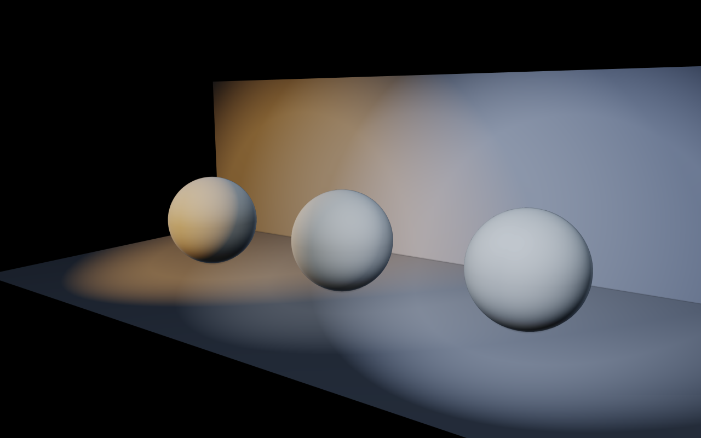
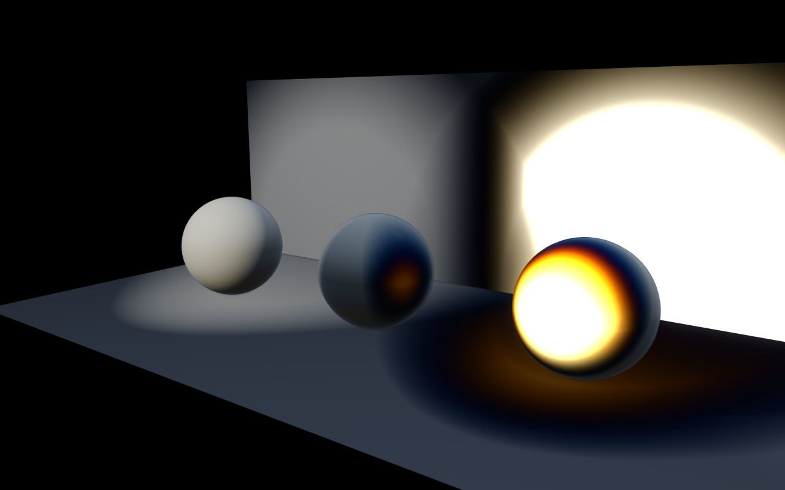
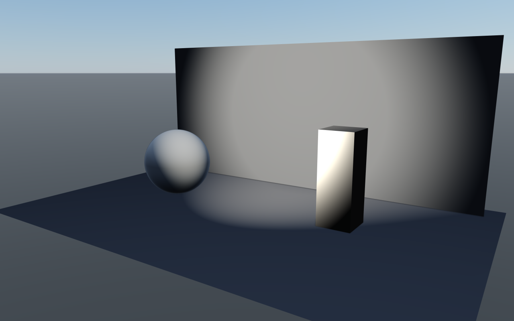
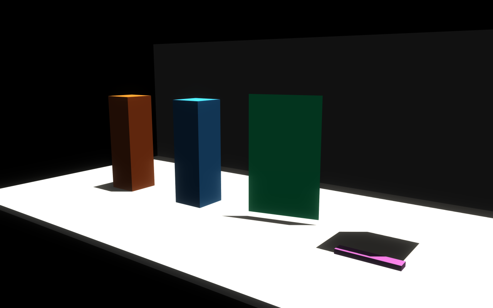
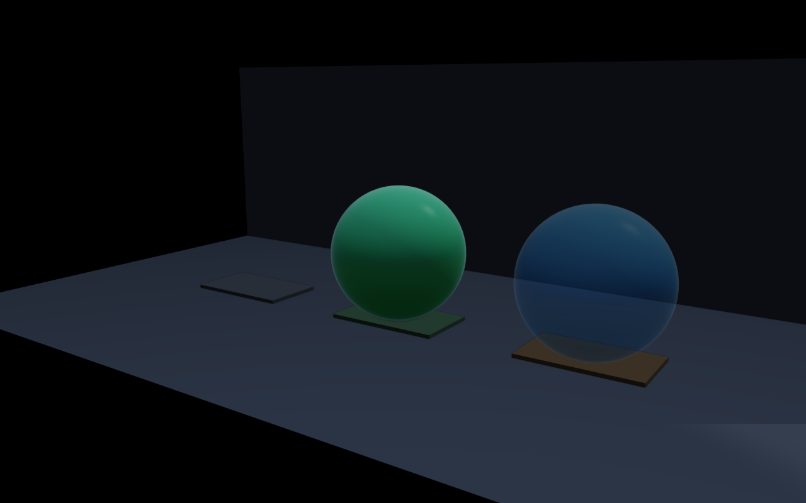
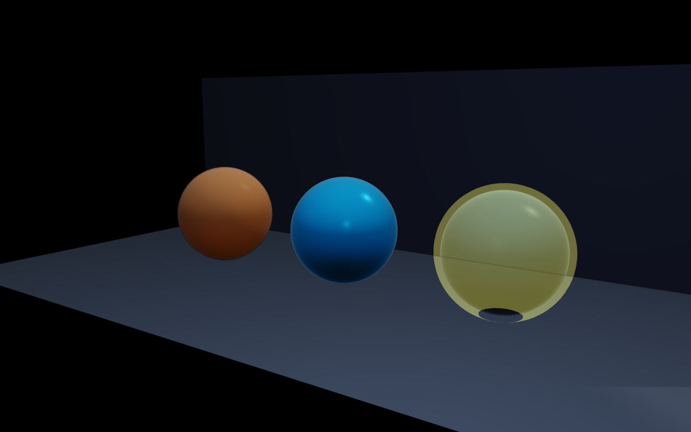

Custom visuals, instancing, and scene helpers
The renderer mirrors RaiSim objects automatically; this page covers the extra viewer-only entities you can add — visual primitives, instanced visuals, custom meshes, point clouds, coordinate frames, and the per-visual controls for visibility range, material override/overlay, and shadow casting modes. CoACD mesh approximation is also covered here.
CoACD mesh approximation visualization
The rayrai_coacd_mesh_approximation example visualizes CoACD collision
mesh approximation. It shows the source mesh and generated convex parts side by
side. The decomposition side uses per-part colors so individual convex bodies
can be inspected. The example is registered as the
rayrai_coacd_mesh_approximation target. Package examples keep its source
under examples/src/rayrai/assets; the current source checkout also registers
the same target from examples/src/rayrai.
This example uses real meshes from rsc such as YCB and Minitaur assets. Some robot
visual meshes are intentionally not used because they are non-manifold visual shells and
are rejected by the minimal CoACD integration.
The typical pattern is to load the source mesh as a viewer-only Visual
and the CoACD decomposition output as a second Visual rendered with a
per-part palette:
// Source mesh (left-side view).
auto sourceMesh = viewer.addVisualMesh("coacd_source", "/path/asset.obj",
glm::dvec3(1.0),
glm::vec4(0.85f, 0.85f, 0.85f, 1.0f));
sourceMesh->setPosition(-0.6, 0.0, 0.0);
// CoACD decomposition output (right-side view), one Visual per part with
// distinct colours from a small palette.
const std::vector<glm::vec4> palette = {
{0.95f, 0.30f, 0.30f, 1.0f}, {0.30f, 0.85f, 0.55f, 1.0f},
{0.30f, 0.60f, 0.95f, 1.0f}, {0.95f, 0.85f, 0.30f, 1.0f},
};
for (size_t i = 0; i < parts.size(); ++i) {
auto p = viewer.addVisualCustomMesh("coacd_part_" + std::to_string(i),
parts[i].meshes,
palette[i % palette.size()]);
p->setPosition(0.6, 0.0, 0.0);
}
Examples
Rayrai examples are documented in Examples. Each example page includes a short explanation and installed executable usage.
Quick map to the current rayrai-related targets:
rayrai_raisim_tcp_viewer: supported packaged TCP viewer forraisim::RaisimServerscenes.rayrai_tcp_viewer: source-tree TCP viewer example target.rayrai_basic_scene: minimal ImGui + SDL2 app showing the standard update loop, custom visuals, and the offscreen render texture.rayrai_complete_showcase: broad in-process scene that combines RGB/depth cameras, raw buffer readback, LiDAR visualization, camera frustums, and custom visuals.rayrai_rgb_camera/rayrai_depth_camera/rayrai_lidar_pointcloud/rayrai_aruco_marker: robot-attached sensor rendering, depth readback, point-cloud visualization, and marker rendering.rayrai_custom_visuals/rayrai_instancing_grid/rayrai_pointcloud_animation: visual primitives, instancing, and dynamic point-cloud streaming.rayrai_pbr_material_grid/rayrai_pbr_texture_maps/rayrai_quality_lighting: PBR materials, texture slots, quality presets, and additional-light configurations.rayrai_visual_asset_support: authored glTF/GLB scene import with PBR materials, embedded lights, and reflection-probe sidecars.rayrai_coacd_mesh_approximation: in-process comparison of source meshes and CoACD convex approximation parts generated throughWorld::addMesh.rayrai_runtime_scene_editing: runtime add/remove of RaiSim objects and rayrai visuals with stable ids, snapshots, collision filters, and cloning.rayrai_rolling_spinning_friction/rayrai_swept_ccd: physics-focused scenes that visualize rolling/spinning friction and swept CCD.rayrai_feature_showcase: offscreen image and metrics generation for the current rayrai feature set.rayrai_quality_comparison: preset comparison images and quality report.rayrai_benchmark: rendering, readback, scene-sync, and TCP serialization benchmark coverage.rayrai_complete_showcase_benchmark: timed version of the complete sensor showcase with optional readback, visualization startup, and startup profiling.rayrai_pbr_first_draw_benchmark: isolated first-draw and warm-frame timing for full PBR and core-eligible PBR material paths.example_rayrai_pbr_asset_inspector: bundled glTF PBR sample assets under rayrai quality settings.OpenUSD visual meshes can be loaded through
RayraiWindow::addVisualMesh; see OpenUSD Loading for importer scope and runtime layout.example_polyhaven_blue_wall: Poly Haven glTF scene import with imported lights, HDR IBL, optional reflection probes, and screenshots.raisim_engine2_editor: source-tree authoring editor that uses rayrai as its 3D viewport and scene-preview renderer. See RaiSim Engine 2.
Custom visuals and instancing
rayrai renders two categories of content:
RaiSim objects: The renderer mirrors the objects already in the world.
Custom visuals: Extra visuals you add explicitly (spheres, boxes, meshes, etc.).
Custom visuals are created through RayraiWindow and returned as Visuals:
auto box = viewer.addVisualBox("marker", 0.1, 0.1, 0.1,
glm::vec4(0.2f, 0.6f, 1.0f, 1.0f));
box->setPosition(1.0, 0.0, 0.5);
The float-per-channel signatures (addVisualSphere(name, radius, r, g, b, a)
etc.) still exist for compatibility, but the glm::vec4 colour overloads
are preferred in new code. addVisualMesh similarly accepts a
glm::dvec3 scale + glm::vec4 colour overload.
For repeated geometry, use InstancedVisuals to reduce draw overhead:
auto instanced = viewer.addInstancedVisuals(
"boxes", raisim::Shape::Box, glm::vec3(0.1f, 0.1f, 0.1f),
glm::vec4(1.f, 0.2f, 0.2f, 1.f), glm::vec4(0.2f, 0.2f, 1.f, 1.f));
instanced->addInstance(glm::vec3(0.0f, 0.0f, 0.1f), 0.0f);
instanced->addInstance(glm::vec3(0.2f, 0.0f, 0.1f), 1.0f);
If you want to load meshes once and share them across visuals, use
raisin::RayraiGlobalAsset and addVisualCustomMesh:
auto assets = std::make_shared<raisin::RayraiGlobalAsset>();
auto meshes = assets->getMeshes("/path/to/model.obj");
auto custom = viewer.addVisualCustomMesh("custom", meshes, glm::vec4(0.9f, 0.9f, 1.0f, 1.0f));
custom->setPosition(0.0, 1.0, 0.5);
The shared mesh handle returned by RayraiGlobalAsset::getMeshes and the
raisin::GenMesh* helpers in rayrai/helper.hpp (GenMeshCube,
GenMeshPlane, GenMeshSphere, GenMeshCylinder, GenMeshCapsule,
GenMeshHeightmapRaisim) all use the type alias
raisin::MeshList = std::shared_ptr<std::vector<std::shared_ptr<OpenGLMesh>>>.
Prefer MeshList over the long nested type in new code.
Visuals::approximateBounds(center, radius) and
InstancedVisuals::approximateBounds(center, radius) expose the conservative
world-space bounds that the renderer uses for culling, picking, shadow planning,
and camera framing. Unlike approximateRadius(), the center can differ from
getPosition() for offset meshes, generated heightmaps, articulated links,
and deformables. Use setCustomBounds(localCenter, localRadius) when a
programmatically deformed visual needs a tighter or more stable bound than its
source mesh provides.
Detectability and capture render passes
VisualCategory is a render-filter category for user-created visuals, not a
physics or collision concept. Visuals, InstancedVisuals, PointCloud,
and helpers built on top of Visuals default to
VisualCategory::NotDetectable. The normal interactive viewer still draws
non-detectable objects, which is intentional: debug axes, camera frustums,
selection helpers, labels, temporary probes, and other viewer-only geometry can
be visible to a human operator without contaminating external-camera or
generated capture images.
External camera scene-color renders filter custom visualization objects by this
category. When a pass requests detectable-only visualization objects,
Visuals and InstancedVisuals are included only after
setDetectable(true) or
setCategory(VisualCategory::Detectable). Point clouds follow the same rule
in passes that request detectable-only point clouds. Reflection-probe captures
and supersampled documentation captures use the same external-camera machinery,
so custom helper geometry that should appear there must also be marked
detectable.
The RaiSim RGBCamera and DepthCamera overloads intentionally disable
rayrai custom visualization objects and point clouds, regardless of
detectability. Use detectability for external-camera/capture paths where
RenderOverrides::drawVisualizationObjects or
RenderOverrides::drawPointClouds is enabled.
Detectability does not create a RaiSim object, collision shape, dynamics body,
semantic label, or material id. RaiSim world objects are controlled by their
own wrappers and render-pass visibility rules; VisualCategory only applies
to rayrai-created visualization objects and point clouds.
Use this rule of thumb:
call
setDetectable(true)for custom props, targets, imported meshes, or point clouds that should appear in external camera, reflection-probe, or documentation captures;leave debug-only helpers non-detectable so they remain visible in the viewer but are skipped by detectable-only capture passes;
use
RenderOverrides::drawVisualizationObjectsandRenderOverrides::drawPointCloudsto enable those object families in an external render, but remember that those toggles still respect detectability filtering for custom visuals and point clouds.
auto target = viewer.addVisualSphere("camera_target", 0.08,
1.0f, 0.2f, 0.1f, 1.0f);
target->setDetectable(true); // Included in external-camera captures.
auto axisHelper = viewer.addVisualBox("debug_axis",
0.02, 0.02, 1.0,
glm::vec4(0.1f, 0.8f, 1.0f, 1.0f));
axisHelper->setDetectable(false); // Viewer helper; skipped by captures.
Visual shadow casting, visibility range, and material overrides
raisin::Visuals exposes per-visual controls that go beyond position/colour
and are useful for authoring polished scenes:
setShadowCastingMode(ShadowCastingMode::Off/On/DoubleSided/ShadowsOnly) —ShadowsOnlyis useful for invisible proxy meshes that cast shadows for off-screen geometry;DoubleSidedis intended for thin foliage cards.setColorPassVisible(false)— hide a visual from color rendering without changing the rest of its state. This is lower-level thanShadowsOnlyand is used internally for TCP mesh-batch proxy visuals.setVisibilityRange(begin, end, beginMargin, endMargin, VisibilityRangeFadeMode)—Selffades the visual itself near the range bounds;Dependenciesfades dependent LOD pairs at the same time.setMaterialOverride(material)— replace all materials on this visual.setMaterialRemap(sourceName, material)— remap a specific imported material slot by name without touching the rest.setMaterialOverlay(material)— additional draw pass on top of the base material (selection outlines, x-ray decals, ghost previews).setTwoSided/setFlatShading/setUseMeshColor— quick toggles for inspection visuals.setCategory/setDetectable— assign theVisualCategoryused by detectable-only external-camera, reflection-probe, documentation-capture, and point-cloud render filters. It is render metadata only, not physics or collision state.setPbrEnvironment(envMap, brdfLut)/setPbrEnvironment(envMap, irradianceMap, prefilteredMap, brdfLut, intensity)— attach an HDR environment to a single visual when global IBL is not appropriate.setTransparency,setTransparentSortOffset,setTransparentSortUsesBoundsCenter— fine control of transparent draw order without enabling full OIT.setAutomaticMeshLodEnabled/setAutomaticMeshLodBias— generated LOD selection for imported meshes.setCustomBounds(localCenter, localRadius)— override the bounds used by frustum culling and shadow planning for skinned or programmatically-deformed meshes.
raisin::InstancedVisuals mirrors many of these (setCastsShadows,
setUseMeshColor, setMaxRenderedInstances,
setRenderedInstanceStride, setProjectedLodPolicy,
setDoubleBufferedInstanceUploads, setSortTransparentInstances) so
high-instance-count visuals can be tuned without affecting unrelated draws.
For mesh instances, setUseMeshColor(true) preserves mesh-authored base
colors or texture colors instead of forcing the per-instance blend colors.
// Two LODs of the same prop: high-detail near, low-poly far.
auto highLod = viewer.addVisualMesh("crate_hi", "/path/crate_hi.glb",
glm::dvec3(1.0), glm::vec4(1.0f));
auto lowLod = viewer.addVisualMesh("crate_lo", "/path/crate_lo.glb",
glm::dvec3(1.0), glm::vec4(1.0f));
// High-detail visible 0..10 m, soft fade-out over the last 1 m.
highLod->setVisibilityRange(/*begin=*/0.0f, /*end=*/10.0f,
/*beginMargin=*/0.0f, /*endMargin=*/1.0f,
raisin::Visuals::VisibilityRangeFadeMode::Self);
// Low-detail visible 10..80 m, soft fade-in over the first 1 m.
lowLod->setVisibilityRange(/*begin=*/10.0f, /*end=*/80.0f,
/*beginMargin=*/1.0f, /*endMargin=*/0.0f,
raisin::Visuals::VisibilityRangeFadeMode::Self);
// Stand-in proxy that casts shadows but never draws colour.
auto proxy = viewer.addVisualBox("offscreen_shadow_proxy",
2.0, 2.0, 3.0, glm::vec4(0.0f));
proxy->setPosition(8.0, 0.0, 1.5);
proxy->setShadowCastingMode(raisin::Visuals::ShadowCastingMode::ShadowsOnly);
// Material override for inspection, plus an outline overlay for selection.
auto ghost = raisin::Material::unlitColor("inspect",
glm::vec4(0.0f, 0.85f, 0.95f, 0.55f));
auto outline = raisin::Material::unlitColor("outline",
glm::vec4(1.0f, 1.0f, 1.0f, 1.0f));
auto inspect = viewer.addVisualMesh("inspect_target", "/path/asset.glb",
glm::dvec3(1.0), glm::vec4(1.0f));
inspect->setMaterialOverride(ghost);
inspect->setMaterialOverlay(outline);
// Remap a single material slot on a multi-material imported asset.
inspect->setMaterialRemap(/*sourceName=*/"GlassPanes",
raisin::Material::pbr("tinted_glass",
glm::vec4(0.1f, 0.4f, 0.8f, 0.4f)));
Point clouds and coordinate frames
Point clouds and coordinate frames are lightweight debug aids:
auto cloud = viewer.addPointCloud("scan");
auto frame = viewer.addCoordinateFrame("robot_frame");
These objects are rendered alongside the world and can be updated every frame.
Call updatePointBuffer() after changing point cloud data.
cloud->positions = {glm::vec3(0, 0, 1), glm::vec3(0.2f, 0.1f, 1.1f)};
cloud->colors = {glm::vec4(0, 1, 0, 1), glm::vec4(1, 0, 0, 1)};
cloud->updatePointBuffer();
Per-visual and per-light gallery
Each additional light exposes optional projector cookies, colour temperature,
distance fade for both lighting and shadows, and a per-light shadow toggle.
The renderer also supports negative lights that subtract instead of add —
useful for cooling shadowed regions or carving artistic dark spots — and
arbitrary projector textures (gobos) that mask a spotlight’s contribution.
See Lighting, shadows, and HDR/IBL for the full AdditionalLight API; this gallery
focuses on the per-visual treatment side.
The visibility-range / material override / shadow-casting-mode controls on
Visuals give per-visual treatment for the same authored mesh: a high-LOD
near visual fades into a low-LOD far one, an override material swaps the look
for inspection, and shadows-only proxies cast occlusion for off-screen
geometry without rendering colour.
// Coloured spotlight with a temperature-driven warm tint and gobo cookie.
raisin::RayraiWindow::AdditionalLight gobo;
gobo.type = raisin::LightType::SPOT;
gobo.position = glm::vec3(1.5f, -1.5f, 3.0f);
gobo.direction = glm::normalize(glm::vec3(-1.0f, 1.0f, -1.5f));
gobo.diffuse = glm::vec3(1.6f);
gobo.spotInnerCos = std::cos(glm::radians(12.0f));
gobo.spotOuterCos = std::cos(glm::radians(28.0f));
gobo.temperatureEnabled = true;
gobo.temperatureKelvin = 3200.0f; // warm tungsten
gobo.projectorMap = goboTextureId; // RGBA8 cookie
gobo.projectorStrength = 1.0f;
gobo.distanceFadeEnabled = true;
gobo.distanceFadeBegin = 12.0f;
gobo.distanceFadeLength = 4.0f;
gobo.castsShadows = true;
viewer.addAdditionalLight(gobo);
// A subtractive (negative) fill light to cool down a shadowed region.
raisin::RayraiWindow::AdditionalLight cool;
cool.type = raisin::LightType::POINT;
cool.position = glm::vec3(-2.0f, 0.0f, 1.8f);
cool.diffuse = glm::vec3(0.10f, 0.16f, 0.32f);
cool.negative = true;
cool.constant = 1.0f; cool.linear = 0.5f; cool.quadratic = 0.20f;
viewer.addAdditionalLight(cool);
Light colour temperature + distance fade |
Negative lights |
|---|---|
 |
 |
Spotlight projectors (gobos) |
Shadow casting modes |
 |
 |
Visibility range |
Material override / overlay |
 |
 |